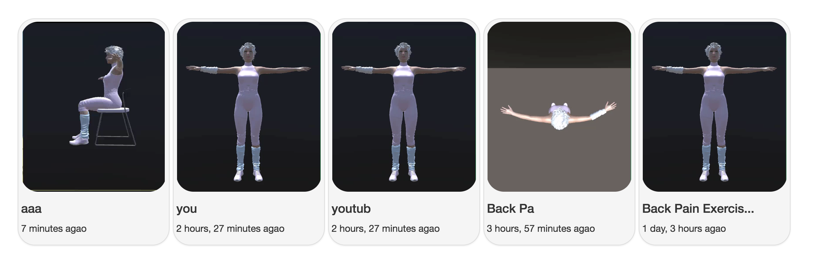
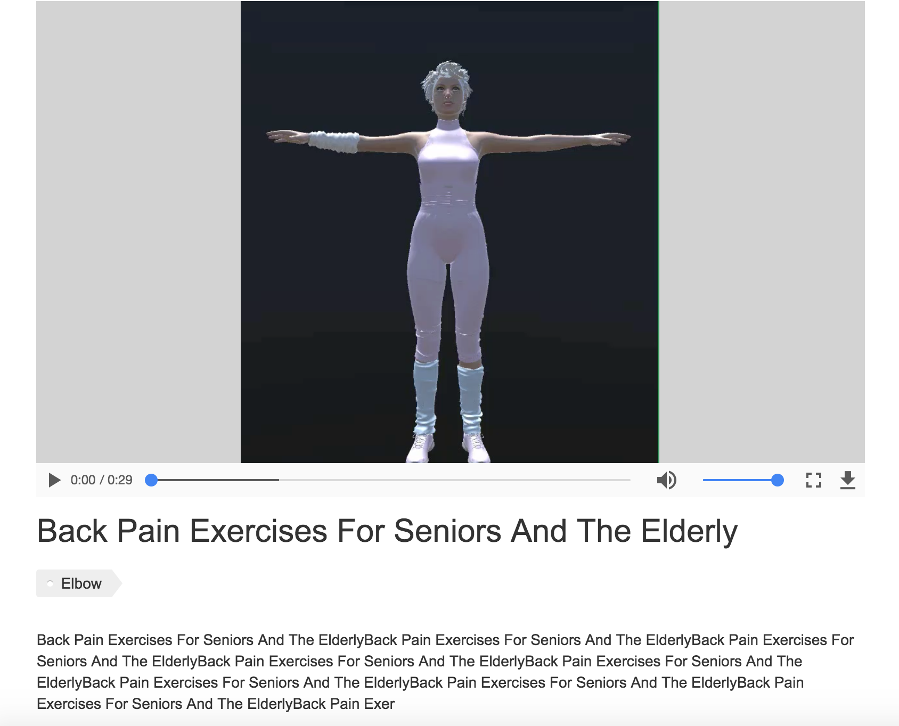
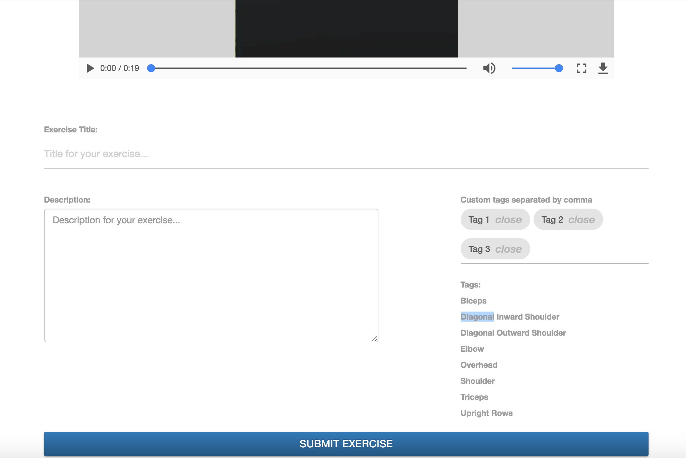

{% extends 'header_footer.html' %}
{% block page_content %}


<!--https://stackoverflow.com/questions/30930079/how-to-get-bootstrap-carousel-to-fit-100-to-screen-->
<style>

.carousel,
.item,
.active {
    height: 100%;
}

.carousel-inner {
    height: 100%;
}

/* Background images are set within the HTML using inline CSS, not here */

.fill {
    width: 100%;
    height: 100%;
    background-position: center;
    -webkit-background-size: cover;
    -moz-background-size: cover;
    background-size: cover;
    -o-background-size: cover;
}


</style>

<!--https://www.w3schools.com/bootstrap/bootstrap_carousel.asp-->
<meta name="viewport" content="width=device-width, initial-scale=1">
<script src="https://ajax.googleapis.com/ajax/libs/jquery/3.2.1/jquery.min.js"></script>
<script src="https://maxcdn.bootstrapcdn.com/bootstrap/3.3.7/js/bootstrap.min.js"></script>

</br>
</br></br></br></br>
<h1 style="text-align:center"> Health is a gift. </h1>
<div style="text-align:center">
</div>
</br>
<h2 style="text-align:center"> You can do it. </h2>
<div style="text-align:center">
</div>
</br>
<h2 style="text-align:center"> Become a master. </h2>
<div style="text-align:center">
</div>


{% endblock %}
